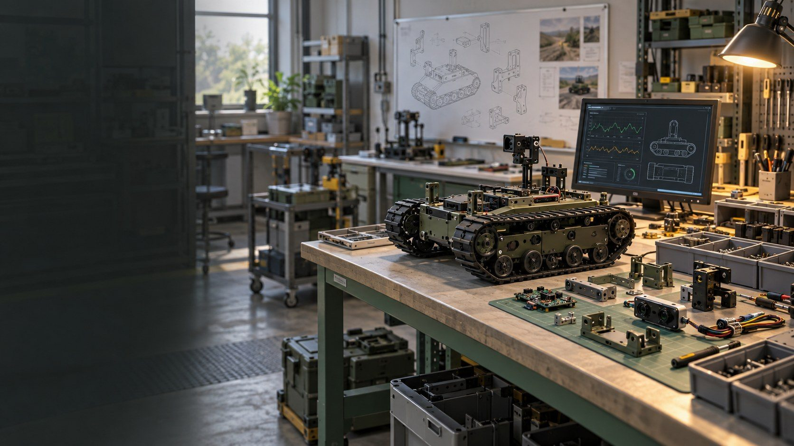
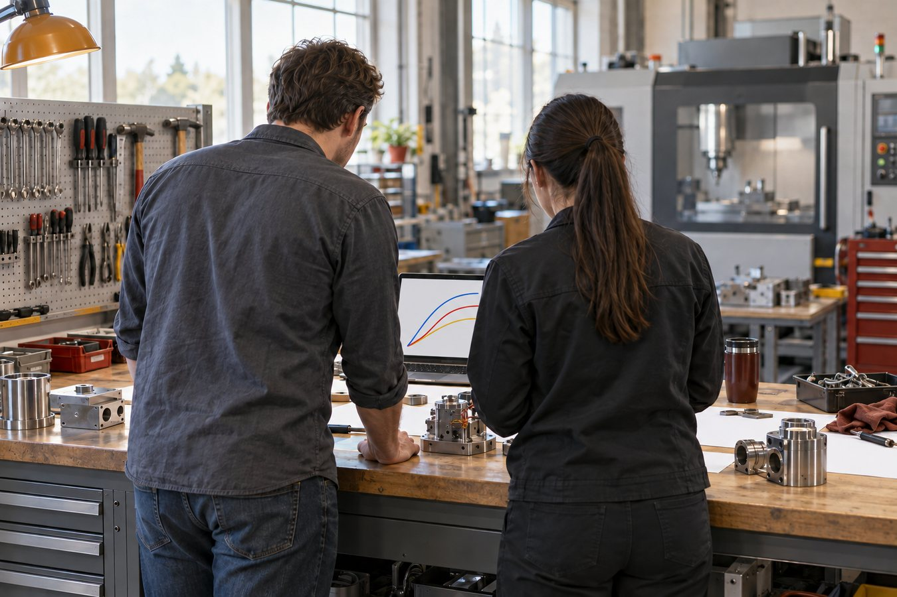
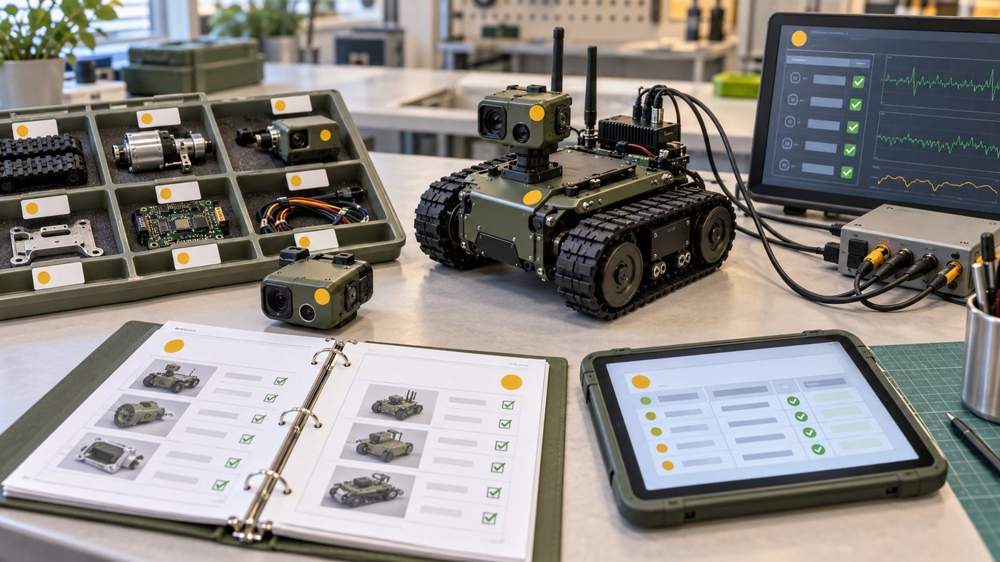
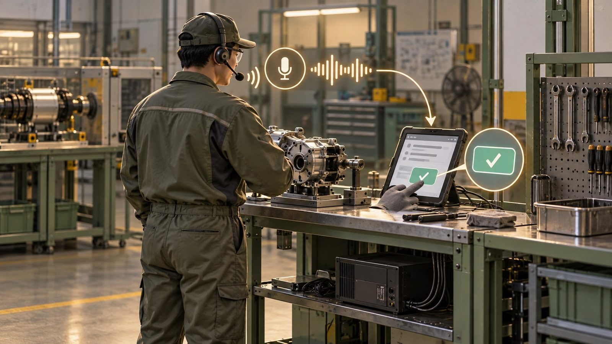
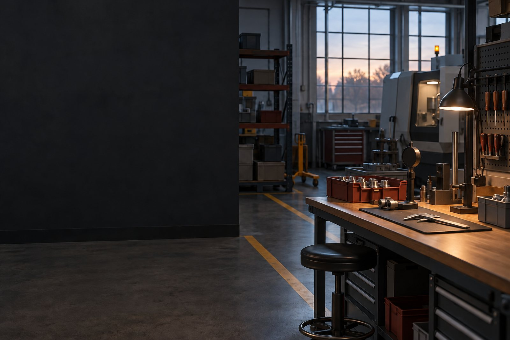

A4AI의
제조 진출 방안
현장 데이터로 시작하는 단계적 진입
2026.10.16
개념 이미지 (AI 생성)오늘 말씀드릴 순서현재 → 진입 조건 → 기술·데이터 → 실행
01
현재 제조 분야는?정책 방향과 예산, 현장 수준, 실증 요구
02
진입 경로 및 조건공고 조사, 신청 가능 공고, 갖출 조건, 정기 공고
03
AI 기술·데이터 활용보유 기술, 현장 음성 작업기록, VCM
04
시작 준비와 실행 계획준비사항, 10월 계획, 6개월 일정, 결론

개념 이미지 (AI 생성)A4AI 기획 보고 · A4AI의 제조 진출 방안
한눈에 보기오늘 보고를 세 가지로 요약드립니다
출처: 회사 현황과 공고 조건을 바탕으로 한 기획안
A4AI 기획 보고 · 요약

01
현재 제조 분야는?
정책은 AI·데이터로, 현장은 아직 데이터를 모으는 단계
2026 정책 방향: 제조 현장에 AI를 붙이는 사업으로중기부 2026 스마트제조혁신은 AI 기반 과제 약 450개 — 산업부 예산도 AI로 이동
핵심지원의 중심이 설비 보급에서 "현장에 AI를 적용하는 일"로 바뀌었습니다
출처: 헬로티 2025.10.30 「중기부, AI 기반 스마트공장 450개 구축 지원」 · 파이낸셜뉴스 2025.10.24 · 중소벤처기업부 공고 제2025-574호 「2026년 스마트제조혁신 지원사업 통합공고」 · 뉴시스 2025.9.1 「산업부, 내년 예산 22% 늘어난 13.9조 편성」 (정부안)
AX AI 전환 — 업무에 AI를 들여 일하는 방식을 바꾸는 것
피지컬 AI 로봇·기계처럼 현실에서 움직이는 장치에 들어가는 AI
A4AI 기획 보고 · 01 현재 제조 분야는?
현장은 아직 기초 단계 — 아직 늦지 않았습니다스마트공장 도입은 이루어지고 있지만, 대부분 데이터를 모으는 수준
출처: 스마트제조혁신추진단 스마트공장 정의·수준 구분 · 디지털데일리 2025.4.28 「중기부 "스마트공장 도입 기업 19.5%에 불과"」 · Korea JoongAng Daily 2025.11.18 (대한상의 제조기업 504곳 조사)
기초 수준 생산 정보를 시스템에 모으기 시작한 단계 — 분석·자동 제어 이전
AI 활용률 4.2% 대한상의 504곳 조사 기준 — 중기부의 "AI 도입률 1%"와 조사 방식이 다름
A4AI 기획 보고 · 01 현재 제조 분야는?
현장은 실증 위주 — 공장 소유보다 실적이 중요합니다공고문을 직접 확인한 결과, 공장등록과 함께 납품·구축 이력이 요구됩니다
출처: 경북매일 2026.9.30·2026.7.12, 영남경제 2026.7.22, 청소년의회 2026.7.1 · 뉴시스 2025.12.24 「M.AX 얼라이언스 참가기관 1300개로 확대」 · 기업마당·기관 공고문과 첨부 원문 (2026.10.15~16 확인)
실증 실제 현장에서 기술이 작동하는지 확인하는 것
납품 이력 납품내역서·거래확인서처럼 실제 거래가 있었음을 보여 주는 기록
A4AI 기획 보고 · 01 현재 제조 분야는?
02
진입 경로 및 조건
공고를 직접 걸러 보고, 무엇을 갖춰야 하는지 확인했습니다
공고 조사: 이렇게 걸렀고, 주로 이런 이유로 빠졌습니다수집 2,785건 → 원문·첨부 대조 38건 → 접수 중 신청 후보 11건
기준10.16 기준 마감 7일 이하(10.23까지)는 준비 기간 부족으로 제외 — 관련 6건은 다음 차수 대비
출처: 기업마당·기관 공고문과 첨부 원문 (2026.10.15~16 확인)
원문 대조 공고 본문과 첨부(HWP·PDF·ZIP)를 모두 열어 자격 조항을 직접 확인한 것
A4AI 기획 보고 · 02 진입 경로 및 조건
지금 신청할 수 있는 공고 11건주관기관과 진행 과제(VCM·UGV·RISE·K-방산) 중복까지 대조
출처: 기업마당·기관 공고문과 첨부 원문 (2026.10.15~16 확인) · 회사 제공 VCM·UGV·RISE 계획서, K-방산 1단계 신청서 (원문 비공개)
간접지원 회사에 현금을 주지 않고 비용을 전문가·수행기관에 지급하는 방식
중복 지원 같은 제품·같은 내용으로 여러 정부 사업에서 비용을 받는 것 — 제외·환수 사유
A4AI 기획 보고 · 02 진입 경로 및 조건
무엇을 갖추면 어떤 공고에 참여할 수 있나조건부 공고는 공장등록·파트너·실적과 인증·기관 확인 네 가지로 나뉩니다
출처: 기업마당·기관 공고문과 첨부 원문 (2026.10.15~16 확인)
조건부 지금은 부족하지만 정해진 조건을 갖추면 신청할 수 있는 공고
공급기업 Pool 정부 사업에서 기술을 공급할 수 있는 기업으로 미리 등록한 명단
A4AI 기획 보고 · 02 진입 경로 및 조건
한 공고의 세부 요건: Multi AI Agent 수요기업공장등록증명이 필수인 공고 — 업종·파트너·부담금까지 맞아야 합니다
출처: 중소벤처기업부 공고 제2026-533호 「중소제조 특화 Multi AI Agent 개발(R&D) 점프업 Track」
수요기업 연구 결과를 자기 공정에 적용하는 제조기업
기관 부담 정부 지원 외에 참여 기업이 내는 연구개발비
A4AI 기획 보고 · 02 진입 경로 및 조건
공장등록은 출발 신호 — 실적을 쌓아야 문이 더 열립니다등록으로 열리는 문과, 실적이 있어야 열리는 문
출처: 기업마당·기관 공고문과 첨부 원문 (2026.10.15~16 확인) · 중소벤처기업부 공고 제2026-533호 「중소제조 특화 Multi AI Agent 개발(R&D) 점프업 Track」
공장등록 「산업집적활성화 및 공장설립에 관한 법률」에 따라 제조시설을 지자체에 등록하는 절차
도입기업 정부 지원으로 기술·설비를 들여오는 기업
A4AI 기획 보고 · 02 진입 경로 및 조건
정기 공고 달력: 뜨기 전에 지금부터 준비해야 합니다1월(R&D·방산)과 3월(바우처·AX)에 몰립니다 — 11~12월이 준비 기간
핵심공고가 뜬 뒤에는 늦습니다 — 공장등록증명·파트너·인력 배정을 11~12월에 미리 갖춥니다
출처: 2026년 각 기관 실제 공고·접수일 (기업마당·기관 게시판·보도), 2027년은 미확정
창업도약패키지 업력 3년 초과~7년 이내 대상 — A4AI는 2027.1.15 이후, 공고 기준일로 재확인
A4AI 기획 보고 · 02 진입 경로 및 조건

03
AI 기술·데이터 활용
이미 가진 기술과 소음·발화 데이터로 현장에 들어갑니다
우리가 가진 AI 기술과 데이터소음 속 음성을 회사 안에서 처리하고, 데이터로 쌓을 수 있는 기반
출처: 회사 제공 자료·현황 (2026.10.16 확인, 원문 비공개) · 회사 제공 VCM·UGV·RISE 계획서, K-방산 1단계 신청서 (원문 비공개)
STT 음성을 글자로 바꾸는 기술
SNR 신호 대 잡음비 — 소리에서 말과 소음의 크기 비율
A4AI 기획 보고 · 03 AI 기술·데이터 활용
기획 예시: 현장 음성 작업기록말로 기록하고, 자동으로 정리하고, 다시 씁니다
출처: 회사 현황과 공고 조건을 바탕으로 한 기획안
인수인계 교대·담당 변경 때 작업 상황과 주의점을 다음 사람에게 넘기는 것
A4AI 기획 보고 · 03 AI 기술·데이터 활용
현장 기록은 아직 손과 종이에 — 그리고 공장은 시끄럽습니다기록이 데이터가 되지 못하는 이유, 말로 남기려면 넘어야 할 소음
출처: 뉴스토마토 2026.9.22 (중기부 연구의 2024 스마트제조 실태조사 재인용) · SupplyChain247 2026.6.16 (L2L 미국 제조 리더 조사) · MDPI Multimodal Technologies and Interaction 8(2):8, 2024
WER 받아쓰기에서 틀린 단어의 비율
dB(A) 사람 귀에 맞춘 소리 크기 단위 — 85 dB(A)부터 소음작업으로 관리
A4AI 기획 보고 · 03 AI 기술·데이터 활용
VCM과 같은 방향 — 이어서 적용하고, 데이터는 계속 쌓입니다VCM 엔진이 완성되면 공장 소음으로 시험하고, 공장등록 후 현장 데이터를 확보
핵심새 기술을 처음부터 만드는 것이 아니라, 진행 중인 VCM 결과를 공장에 적용하고 그 데이터로 다시 개선합니다
출처: 회사 제공 VCM·UGV·RISE 계획서, K-방산 1단계 신청서 (원문 비공개)
VCM (VoiceClear-M) 군용 무전기용 AI 소음감쇄·음성향상 칩 모듈 과제 — 2026.05~12
A4AI 기획 보고 · 03 AI 기술·데이터 활용

04
시작 준비와 실행 계획
기준을 갖춰 준비하고, 10월부터 단계별로 실행합니다
시작하기 위한 준비사항 — 갖춰졌다는 기준까지수요처·데이터·협력·조직과 예산, 네 가지를 기준이 설 때까지 준비합니다
출처: 회사 현황과 공고 조건을 바탕으로 한 기획안
참여율 한 사람이 정부 과제에 투입하는 시간 비율 — 과제끼리 합쳐 100%를 넘을 수 없음
A4AI 기획 보고 · 04 시작 준비와 실행 계획
10월: 공장등록 후 계획등록 마무리 → 계획서 초안·과제 대조 → 신청 준비 → 실증 단계
출처: 회사 현황과 공고 조건을 바탕으로 한 기획안
A4AI 기획 보고 · 04 시작 준비와 실행 계획
6개월 실행 계획10월 계획 → 11월 시설·인원 → 12~1월 공고 신청 → 2월 시험·시제품 계획 → 3월 확대 판단
출처: 회사 현황과 공고 조건을 바탕으로 한 기획안 · 2026년 각 기관 실제 공고·접수일 (기업마당·기관 게시판·보도), 2027년은 미확정
A4AI 기획 보고 · 04 시작 준비와 실행 계획
최종 결론늦지 않았습니다 — 공장등록으로 시작하고, 실적은 AI·데이터 실증으로 쌓습니다
정리있는 것(AI·데이터)으로 먼저 실증하고, 그 기록을 실적으로 만들어 제조 진입 범위를 넓힙니다
출처: 회사 제공 자료·현황 (2026.10.16 확인, 원문 비공개) · 회사 제공 VCM·UGV·RISE 계획서, K-방산 1단계 신청서 (원문 비공개) · 회사 현황과 공고 조건을 바탕으로 한 기획안
A4AI 기획 보고 · A4AI의 제조 진출 방안
질의응답
제조 진출 방향과 준비 범위
부록 A · 판정 기준과 걸러 낸 과정회사 조건과 판정 규칙
| 항목 | 내용 |
|---|---|
| 회사 조건 | 2024.1.15 설립(업력 2년 9개월), 경북 구미, 상시근로자 10~29명, 벤처기업·기업부설연구소, 공장등록 진행 중 |
| 판정 | 가능(지금 자격 충족) / 조건부(조건을 갖추면 가능) / 확인 필요(기관 문의) / 불가 |
| 7일 규칙 | 10.16 기준 마감 7일 이하(10.23까지)는 준비 불가로 보고 제외 → 다음 차수 목록 |
| 과제 중복 | VCM·UGV·RISE·K-방산 1단계의 범위·기간·비용과 공고별 중복 제한 조항을 대조 |
| 근거 | 기업마당 상세와 첨부(HWP·HWPX·PDF·ZIP)를 텍스트로 바꿔 대조, 조항·쪽수 기록 |
출처: 기업마당·기관 공고문과 첨부 원문 (2026.10.15~16 확인) · 회사 제공 자료·현황 (2026.10.16 확인, 원문 비공개)
A4AI 기획 보고 · 보충자료
부록 B · 접수 중 후보 11건의 자격 근거공고문 지원대상 조항과 중복 관련 조항
| 공고 (주관·수행) | 자격 근거 | 중복·제한 조항 |
|---|---|---|
| 상생형 창업·벤처 (한국도로공사) | 창업 7년 이내 또는 벤처기업, 드론·자율주행 분야 포함 | 같은 품목 정부 지원 여부 확인 — UGV·RISE와 다른 품목 |
| 빅웨이브 IR (인천창조경제혁신센터) | 7년 이내 초격차 분야 법인(로봇·AI) | 투자 연계 — 사업비 지원 아님 |
| 기업애로 원스톱 (구미전자정보기술원) | 구미 사업장 가동 중소·중견기업 | '유사정책자금으로 사업수행 중이거나 받을 예정 기업' 제외 |
| 민·군규격표준화 (국방기술품질원) | 산·학·연 과제 제안 | 정부 R&D로 기 지원된 과제는 검토 제외 |
| 구미 스타트업 제작센터 (구미전자정보기술원) | 업력 7년 이내, 구미 소재 (원문 재확인) | 과제 시제품과 다른 품목만 |
| 실외이동로봇 기술지원 (한국로봇산업진흥원) | 실외이동로봇 관련 국내 기업 | 서면평가로 중복성 검토, 인증 수검 중 모델 제외 |
| 온디바이스 AI 애로기술 (한국로봇융합연구원) | 지능형로봇·첨단제조장비 등 관련 중소·중견 | 최근 2년 동일제품·동일내용 지원은 중복 |
| 공유공장 시험검사 (FITI시험연구원) | 업력 5년 이내 제조창업기업 또는 중소기업, 타지역 가능 | 과제 예산의 시험 항목과 구분 |
| AI데이터센터 테스트베드 (포항테크노파크) | 전국 IT·SW·데이터센터 기업 | 현금 지원 아님 |
| 방산혁신클러스터 판로개척 (국방기술진흥연구소) | 경북·구미 방산 기업 (원문 재확인) | 같은 전시회 비용 이중 청구 금지 |
| 연구장비 임대 (한국로봇산업진흥원) | 중소·중견, 장비 전문인력 보유·채용 예정 | 유료 임대 |
출처: 기업마당·기관 공고문과 첨부 원문 (2026.10.15~16 확인)
A4AI 기획 보고 · 보충자료
부록 C · 조건부 13건 — 갖춰야 할 것대부분 10~11월 마감, 문의·파트너 확보가 먼저
| 마감 | 공고 (주관) | 갖춰야 할 조건 |
|---|---|---|
| 10.27 | 차세대 항공 기체부품 (부산TP) | 드론 부품이 항공 기체부품으로 인정되는지 확인, 현금 10% |
| 10.29 | KST 딥테크 투자 (한국과학기술지주) | 출연(연) 기술 실시권 확보 또는 기술 매칭 |
| 10.29 | 대구 제조데이터 컨설팅 (대구TP) | 공급기업 Pool 등록, 최근 3년 구축 실적 |
| 10.30 | Multi AI Agent 수요기업 (TIPA) | 공장등록증명 + 자격 있는 공급 주관기관 |
| 10.31 | 혁신제품 지정 컨설팅 (한국남부발전) | 산업부 R&D 제품 또는 성능인증 등 인증 제품 |
| 11.12 | 지역거점 AX R&D (대구디지털혁신진흥원) | 대구 주관기관 + 공동기관 참여, 민간부담 25% |
| 11.13 | 한계돌파 R&D (한국연구재단) | 대학·출연연 컨소시엄과 연구책임자 |
| 11.13 | 해외규격인증 (KTR) | 수출 제품과 필요 인증이 정해져 있을 것 |
| 11.30 | 국방기술 민간이전 (경북TP) | 방사청 기술이전 승인, 이전 기술 선정 |
| 11.30 | 경량소재 장비 사용료 (경북TP) | 가공 장비가 필요한 부품 시제품 |
| 11.30 | 개방형혁신 장비 (경북TP) | 사업장이 지정 구역 안일 것 |
| 12.18 | 엔드이펙터 시험 (KTL) | 그리퍼 등 말단장치 품목 |
| 수시 | 제조DX멘토단 (지역 TP) | 공장 가동 후 공정 수요, 경북 잔여 예산 |
출처: 기업마당·기관 공고문과 첨부 원문 (2026.10.15~16 확인)
A4AI 기획 보고 · 보충자료
부록 D · 불가 10건과 7일 규칙 제외원문 대조 후 불가 판정과 다음 차수 대비
| 구분 | 공고 | 이유 |
|---|---|---|
| 증빙 | 방산·모빌리티 스마트공장 (경북TP) | '24~'25 납품내역서·거래확인서 필수, 3개년 재무제표 |
| 이력 | Multi AI Agent 주관 (TIPA) | 선행 스마트제조 R&D 완료 기관만 |
| 지역 | 경북형 스마트공장 2차 · 포항 3차 | 남은 자리 안동·김천 / 포항 소재 |
| 지역 | 대구 기술닥터 · 대전 3D프린팅 · 대구 AI로봇 | 대구·대전 소재 요건 |
| 기간 | 대경 이음 R&D · GERI 반도체 시제품 | 지원기간 종료 / 접수 종료 → 2027 대비 |
| 제품 | 물류 서비스로봇 시험 (KTL) | 물류로봇 제품 없음 |
| 7일 | GERI 온디바이스 기술지도 (10.16) | 오늘 마감 — 다음 차수 |
| 7일 | 방산 중소기업 컨설팅 (10.19) | 2027년 1차(작년 4월) 대비 |
| 7일 | K-AI 경북형 동반성장 (10.23) | 앵커 중견기업 확보 후 2027 대비 |
출처: 기업마당·기관 공고문과 첨부 원문 (2026.10.15~16 확인)
A4AI 기획 보고 · 보충자료
부록 E · 진행 과제 범위와 신규 업무 구분협약서·세부 예산으로 최종 확인 전 기획 기준
| 과제 | 진행 범위 (원문) | 신규 지원에서 할 수 있는 일 |
|---|---|---|
| VCM | DSP 펌웨어 v1.0, AI 음성향상 엔진 프로토타입, 무전기 연동 실증 (26.05~12) | 제조 작업 양식·용어 사전, 공장 소음 데이터 수집·현장 검증 |
| UGV | 야지 경로판단 검증용 SW, UGV 시험 (26.06~27.06) | 경로판단과 무관한 품목·시험 |
| RISE | 온디바이스 AI 자율순찰 로봇 통합·실증 (26.04~12, 공동) | 순찰 로봇과 다른 제품의 시험 |
| K-방산 1단계 | 전장 음성 STT·보정·7개 필드 구조화·승인·DB 서버 (26.07~12, 신청) | 구조화 기능 개발 제외, 제조 현장 적용·검증만 |
| 완료·준비 | 전주기 방산 창업, RISE 드론·LiDAR SLAM, 초기창업패키지, 민군기술이전 스핀오프 준비 | 과거 지원 이력은 공고별 동일제품 제한에 포함 검토 |
출처: 회사 제공 VCM·UGV·RISE 계획서, K-방산 1단계 신청서 (원문 비공개)
A4AI 기획 보고 · 보충자료
부록 F · 숫자와 출처본문에 쓴 수치
| 수치 | 출처 |
|---|---|
| AI 기반 과제 약 450개 (제조 AI 특화 스마트공장 400·자율형 30·상생형 20) | 헬로티 2025.10.30 「중기부, AI 기반 스마트공장 450개 구축 지원」 · 파이낸셜뉴스 2025.10.24 |
| 제조 특화 AI 과제당 최대 2억·정부 50%, AI 응용제품 45개(최대 30억), 제조데이터 상품 25개 | 중소벤처기업부 공고 제2025-574호 「2026년 스마트제조혁신 지원사업 통합공고」 |
| 2030: AI 중심 스마트공장 1.2만, 중소 AI 도입률 1%→10%, 데이터셋 1,000개 | 파이낸셜뉴스 2025.10.24 |
| 산업 AX 4,561억→1조 1,347억, 피지컬 AI 2,149억→4,022억, AI 팩토리 2,200억 (정부안) | 뉴시스 2025.9.1 「산업부, 내년 예산 22% 늘어난 13.9조 편성」 (정부안) |
| 스마트공장 도입 19.5%, 도입 기업 75.5% 기초 수준 | 디지털데일리 2025.4.28 「중기부 "스마트공장 도입 기업 19.5%에 불과"」 |
| 중소·중견 제조 AI 활용 4.2% (대기업 49.2%) | Korea JoongAng Daily 2025.11.18 (대한상의 제조기업 504곳 조사) |
| 구미 AX 실증산단 245.9억, AI 솔루션·데이터셋 36개 | 경북매일 2026.7.12 |
| AI 팩토리 선도 프로젝트 102개 | 뉴시스 2025.12.24 「M.AX 얼라이언스 참가기관 1300개로 확대」 |
| 제조 데이터 수기 입력 75.7%, 실시간 19.7% | 뉴스토마토 2026.9.22 (중기부 연구의 2024 스마트제조 실태조사 재인용) |
| 감독자 65% 교대당 최대 4시간 수작업 데이터·보고 (미국) | SupplyChain247 2026.6.16 (L2L 미국 제조 리더 조사) |
| 87 dB(A) WER 37% (스튜디오 실험, 22명) | MDPI Multimodal Technologies and Interaction 8(2):8, 2024 |
| Multi AI Agent: 39억 이내·24개월·75%, 공장등록증명 필수, 기관부담 25%(현금 10%) | 중소벤처기업부 공고 제2026-533호 「중소제조 특화 Multi AI Agent 개발(R&D) 점프업 Track」 |
출처: 회사 현황과 공고 조건을 바탕으로 한 기획안
A4AI 기획 보고 · 보충자료